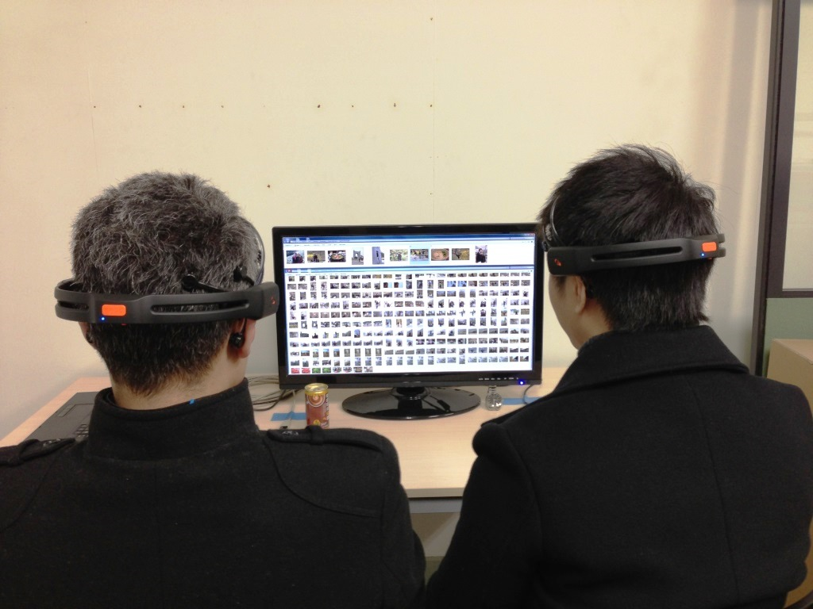
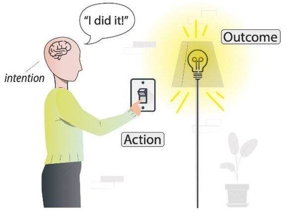

RESEARCH THEMES
Multisensory Interface & Novel Interaction Design
When interacting with computers, we mostly rely on vision, audition, and touch, whilst taste and smell remain largely underexploited. It is essential to determine what tactile, gustatory, and olfactory experiences we can design for, and how we can meaningfully stimulate such experiences when interacting with technology. Importantly, it is vital to understand what the limitations are that come into play when users need to monitor more than one sense at a time. (read more)

Brain Computer Interface
A brain computer interface (BCI) is a communication system that allows users to control computers or external devices by detecting and interpreting brain activities. The initial goals of BCI were to help severely disabled people, such as people with "locked-in" syndrome, to communicate with the outside world by interpreting their brain signals into corresponding external commands. Nowadays, state-of-the-art BCIs, especially using Electroencephalography (EEG), bring benefits to normal and healthy computer users in a way that enriches their experiences of everyday Human Computer Interaction (HCI). (read more)

Eating Behaviour & Eating Experiences
Eating is one of the fundamental pleasures and one of the most multisensory experiences in everyday life. All of our five senses (i.e., taste, smell, vision, hearing, and touch) are involved, even if we are unaware of them. It has been demonstrated that the perceived eating experience relies on the integration of cues from all human senses, forming the "flavour" of the consumed food. This multisensory aspect of eating leads to an emerging and promising research field in crossmodal correspondences, which investigates the augmentation and modulation of flavour perception through the change of taste and other sensory modalities. (read more)

Decision Making & Sense of Agency
The Sense of Agency (SoA) refers to the subjective experience of voluntary control over actions in the external world. It is a critical aspect in human computer interaction as it allows users to say: "I am, who is doing this". A system without or with a low SoA will discourage users from operating it, preventing the widespread use of the system. Vice versa, a system with high SoA will let users have a similar, or even better, feeling of control in interacting with the system. SoA is important to evaluating novel interfaces, enabling a wider uptake of such systems. (read more)